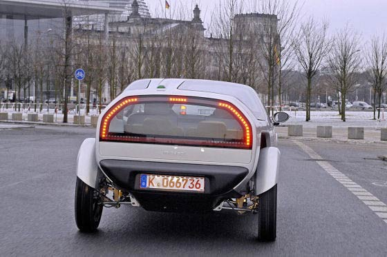

|
Mindset'in Türkiye'de üretilip dünya pazarlarýna açýlmasý zor görünüyor:
Devlet Bakaný Zafer Çaðlayan'ýn Ankara'daki deneme sürüþlerinden sonra, "Türk sanayicisi Anadolu'daki KOBÝ'leriyle beraber üretecek. Dünyaya Türk adýný ve Türk imajýný duyuracak" açýklamasýný deðerlendiren otomotivciler, konsept araç üretiminin çok zor olmadýðýný, önemli kýsmýn "yatýrýmcý, marka oluþturma ve global pazarlama" olduðunu belirtti. Birçok dev markanýn iflas ettiðini ve yatýrýmcýlarýn yeni projelere finansman bulmakta zorlandýðýný kaydeden yetkililer, aracýn seri üretimine geçilmesi için en az 400 milyon dolarlýk yatýrým gerektiðini vurguladý.
GM Türkiye Genel Müdürü Özcan Keklik, konseptin güzel olduðunu vurgulayarak, "Yine de iþ konsepti yaratmakla bitmiyor. Hayata nasýl geçecek, kim finansmaný karþýlayacak, marka ne olacak? Akla milyonlarca soru geliyor. Hükümet yatýrýmý finanse eder veya önayak olursa sorun yok. Ama bu ekonomik þartlarda bana oldukça zor gözüküyor. Bekleyip göreceðiz" dedi.
Otomotiv Sanayi Derneði Genel Sekreteri Prof. Dr. Ercan Tezer de birçok firma ve giriþimcinin konsept model üretebildiðini, ancak önemli olanýn bu projeyi, "seri üretim, global pazarlara daðýtým ve pazarlama" olarak hayata geçirmek olduðunu söyledi. Tezer, "Mindset'in küresel pazarlara açýlmasý için ne gibi çalýþmalar yapýlýyor? Konsept araç imalatýný herkes yapýyor. Ama yatýrýmcý bulup, gerekli distribütör ve bayi aðýný kurup bu ürünü global pazarlara sunmak önemli. Bu unsurlar ortada yokken, bir aracý ortaya çýkarýp hemen büyük hedefler ortaya konulmamalý. Yýllar önce "Jet Fadýl" lakaplý Fadýl Akgündüz, "Ýmza" diye bir aracýn prototipini yapmýþ, uluslararasý fuara katýlmýþtý. Otomotivde rekabetin ayyuka çýktýðý, firmalarýn iflasa gittiði bu dönemde eðer araç burada üretilecekse plan, program ve hedefler daha somut ortaya konulmalý. Yoksa hayalden öteye geçemez" dedi.
Toyotasa Genel Müdürü Ýbrahim Orhon ise çevreci bir aracýn Türkiye'de üretilmesinden memnunluk duyacaklarýný belirterek, "Ýnþallah projenin gerisi gelir" dedi. Sýfýrdan marka veya bir araç yaratmanýn çok zor olduðunu kaydeden Orhon, "Yeni bir markanýn baþarýlý olmasý için altyapý gerekir. Ayrýca tek bir model ile bu baþarýlamaz. Murat Günak'ýn projesi güzel ama Türkiye'den destek bulunamazsa, "Türk markasý olsun" diye ýsrar edilmemeli. Bilinmeyen veya pazara yeni giren marka ancak fiyatý aþaðýya çeker. Baþarý isteniyorsa daha derin araþtýrmalar yapýlýp önlemler alýnmalý" diye konuþtu.
Renault Trucks, Peugeot gibi markalara fason üretim yapan Karsan'ýn Genel Müdürü Murat Selek de, "Karsan olarak birçok markaya fason araç ürettiðimizden bizim iþ modelimize uygun bir konu. Ancak fizibilite doðru yapýlarak, doðru bir iþ modeliyle pazarlara çýkmalý" dedi.
Türkiye Odalar ve Borsalar Birliði (TOBB) Otomotiv Ticaret Meclisi Baþkaný Yüksel Mermer, aracýn Türk malý olarak devreye girmesinin ancak devletin kesenin aðzýný açmasýyla mümkün olabileceðini belirtti. Mermer, "Projenin Türkiye'de olmasýný isteriz. Ancak otomotivde artýk küçük marka diye bir þey kalmýyor. Yeni bir model ve marka için milyarlarca dolar yatýrým gerekiyor" dedi.

Videolar
Prototip araç denemeleri
Kaynak: www.myvideo.de/watch/5053420/Murat_Guenak_Hybrid_Auto
Mindset Prototype
Kaynak: www.dailymotion.com/video/x522gy_mindset-prototype_auto
Mindset Berlin caddelerinde, halkýn beðenisine sunuluyor..
Kaynak: www.wattgehtab.com/index.php/content/view/2280/25
Mindset e-motion electric car
Prototip testleri
Kaynak: www.wattgehtab.com/index.php/content/view/1911/25
Mindset electric car Protoype test drive (19-01-2008)
Kaynak: www.wattgehtab.com/index.php/content/view/1911/25
Kaynaklar:
- www.mindset.ch > mindset resmi web sitesi
- www.dailymotion.com/video/x9nuan_babakan-erdoan-hibrit-motorlu-araba_news > (video) Baþbakan Recep Tayyip Erdoðan hibrit motorlu yeni tasarým bir aracýn ilk test sürüþünü yaptý
- www.dailymotion.com/video/x9ntaz_bakan-baybakanyn-elektrikli-otomobi_news > (video) Devlet Bakaný Zafer Çaðlayan, Baþbakan Recep Tayyip Erdoðan'ýn test sürüþü yaptýðý elektrikle çalýþan 'Mindset' marka yeni tasarým otomobil hakkýnda bilgi verdi.
- www.turkiyegazetesi.com/HaberDetay.aspx?haberid=412026 > Devrim'den 48 yýl sonra elektrikli otomobilimiz oldu, Türkiye, 29 Haziran 2009
- www.haber7.com/haber/20090625/Turkiye-bu-aracin-fabrikasini-kuruyor.php > Türkiye bu aracýn fabrikasýný kuruyor, 25 Haziran 2009
- www.referansgazetesi.com/haber.aspx?HBR_KOD=124887 > Mindset'in yola çýkmasý için 400 milyon dolar lazým, Referans, 25.06.2009
- www.milliyet.com.tr/Ekonomi/HaberDetay.aspx?aType=HaberDetay&ArticleID=1110025 > Kültür baþkenti misafirini Mindset'le gezdirme planý, Milliyet, 24.6.2009
- www.hurriyet.com.tr/ekonomi/11930423.asp > 2010 Kültür Baþkenti'ne gelen Türk imzalý elektrikli otoyla gezecek
- www.sabah.com.tr/Ekonomi/2009/06/24/turk_porschesi_2010da_kultur_elcisi_olacak > Türk Porsche'si 2010'da kültür elçisi olacak
- www.zaman.com.tr/haber.do?haberno=862047 > Bu otomobil Türkiye'nin adýný dünyaya duyuracak, ZAMAN, 23 Haziran 2009
- www.hurriyet.com.tr/gundem/11921404.asp > Erdoðan çevreci aracý test etti
- http://www.sabah.com.tr/Ekonomi/2009/06/23/hungur_hungur_aglatan_yatirim > Hüngür hüngür aðlatan yatýrým, SABAH, 23.06.2009
- www.sabah.com.tr/Yazarlar/sandik/2009/06/29/gunakin_mindset_projesinde_sabah_imzasi > Günak'ýn Mindset projesinde SABAH imzasý
- www.turkdesignstudio.com/modules.php?name=News&op=NEArticle&sid=242 > Site Tanýtýmý: Murat Günak: Mindset E-Motion Concept resmi web sitesi, TurkDesignStudio.com
- http://arsiv.otomobil.ntvmsnbc.com/galeri_090127_2008MindsetEMotionConcept.asp > Fotoðraf Galerisi: 2008 Mindset E-Motion Concept, NTVMSNBC Otomobil
- http://arsiv.otomobil.ntvmsnbc.com/haberler_090128_mindset.asp > Haberler: Mindset E-motion, NTVMSNBC Otomobil
|